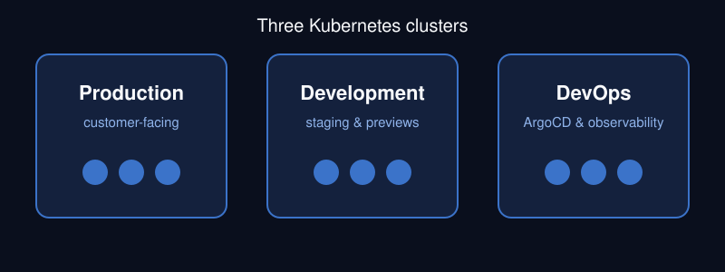

Reliability
Health checks, alerts and clear runbooks so problems are found before users find them.
Cloud & Platform Engineer
I design, run and troubleshoot cloud infrastructure. My day-to-day work covers Kubernetes clusters on Google Cloud, GitOps delivery and observability, and I also support enterprise workloads on AWS.
I am currently studying Fundamentals of Web Development at Illinois Institute of Technology. This site is my second course project: the same three pages, now styled with CSS.

Health checks, alerts and clear runbooks so problems are found before users find them.
Everything declared in Git and reconciled automatically, with no manual cluster changes.
Metrics and logs in one place, so any engineer can see what a service is doing.